Differential expression across all donors
Davis J. McCarthy
Last updated: 2018-08-17
workflowr checks: (Click a bullet for more information)-
✔ R Markdown file: up-to-date
Great! Since the R Markdown file has been committed to the Git repository, you know the exact version of the code that produced these results.
-
✔ Environment: empty
Great job! The global environment was empty. Objects defined in the global environment can affect the analysis in your R Markdown file in unknown ways. For reproduciblity it’s best to always run the code in an empty environment.
-
✔ Seed:
set.seed(20180807)The command
set.seed(20180807)was run prior to running the code in the R Markdown file. Setting a seed ensures that any results that rely on randomness, e.g. subsampling or permutations, are reproducible. -
✔ Session information: recorded
Great job! Recording the operating system, R version, and package versions is critical for reproducibility.
-
Great! You are using Git for version control. Tracking code development and connecting the code version to the results is critical for reproducibility. The version displayed above was the version of the Git repository at the time these results were generated.✔ Repository version: 6b5f8c7
Note that you need to be careful to ensure that all relevant files for the analysis have been committed to Git prior to generating the results (you can usewflow_publishorwflow_git_commit). workflowr only checks the R Markdown file, but you know if there are other scripts or data files that it depends on. Below is the status of the Git repository when the results were generated:
Note that any generated files, e.g. HTML, png, CSS, etc., are not included in this status report because it is ok for generated content to have uncommitted changes.Ignored files: Ignored: .DS_Store Ignored: .Rproj.user/ Untracked files: Untracked: CITATION Untracked: LICENSE Untracked: code/analysis_for_garx.Rmd Untracked: data/canopy/ Untracked: data/cell_assignment/ Untracked: data/de_analysis_FTv62/ Untracked: data/donor_info_070818.txt Untracked: data/donor_neutrality.tsv Untracked: data/fdr10.annot.txt.gz Untracked: data/high-vs-low-exomes.v62.ft.alldonors-filt_lenient.all_filt_sites.vep_most_severe_csq.txt Untracked: data/high-vs-low-exomes.v62.ft.filt_lenient-alldonors.txt.gz Untracked: data/human_H_v5p2.rdata Untracked: data/human_c2_v5p2.rdata Untracked: data/human_c6_v5p2.rdata Untracked: data/sce_merged_donors_cardelino_donorid_all_qc_filt.rds Untracked: data/sce_merged_donors_cardelino_donorid_all_with_qc_labels.rds Untracked: data/sce_merged_donors_cardelino_donorid_unstim_qc_filt.rds Untracked: data/sces/ Untracked: data/simulations/ Untracked: data/variance_components/ Untracked: docs/figure/ Untracked: figures/ Untracked: output/differential_expression/ Untracked: output/donor_specific/ Untracked: output/nvars_by_category_by_donor.tsv Untracked: output/nvars_by_category_by_line.tsv Untracked: output/variance_components/
Expand here to see past versions:
Here, we will lok at differential expresion between clones across all donors at the gene and gene set levels.
Load libraries, data and DE results
Load the genewise differential expression results produced with the edgeR quasi-likelihood F test and gene set enrichment results produced with camera.
params <- list()
params$callset <- "filt_lenient.cell_coverage_sites"
load(file.path("data/human_c6_v5p2.rdata"))
load(file.path("data/human_H_v5p2.rdata"))
load(file.path("data/human_c2_v5p2.rdata"))
de_res <- readRDS(paste0("data/de_analysis_FTv62/",
params$callset,
".de_results_unstimulated_cells.rds"))Load SingleCellExpression objects with data used for differential expression analyses.
fls <- list.files("data/sces")
fls <- fls[grepl(params$callset, fls)]
donors <- gsub(".*ce_([a-z]+)_.*", "\\1", fls)
sce_unst_list <- list()
for (don in donors) {
sce_unst_list[[don]] <- readRDS(file.path("data/sces",
paste0("sce_", don, "_with_clone_assignments.", params$callset, ".rds")))
cat(paste("reading", don, ": ", ncol(sce_unst_list[[don]]), "cells.\n"))
}reading euts : 79 cells.
reading fawm : 53 cells.
reading feec : 75 cells.
reading fikt : 39 cells.
reading garx : 70 cells.
reading gesg : 105 cells.
reading heja : 50 cells.
reading hipn : 62 cells.
reading ieki : 58 cells.
reading joxm : 79 cells.
reading kuco : 48 cells.
reading laey : 55 cells.
reading lexy : 63 cells.
reading naju : 44 cells.
reading nusw : 60 cells.
reading oaaz : 38 cells.
reading oilg : 90 cells.
reading pipw : 107 cells.
reading puie : 41 cells.
reading qayj : 97 cells.
reading qolg : 36 cells.
reading qonc : 58 cells.
reading rozh : 91 cells.
reading sehl : 30 cells.
reading ualf : 89 cells.
reading vass : 37 cells.
reading vils : 37 cells.
reading vuna : 71 cells.
reading wahn : 82 cells.
reading wetu : 77 cells.
reading xugn : 35 cells.
reading zoxy : 88 cells.The starting point for differential expression analysis was a set of 32 donors, of which 31 donors had enough cells assigned to clones to conduct DE testing.
Summarise cell assignment information.
assignments_lst <- list()
for (don in donors) {
assignments_lst[[don]] <- as_data_frame(
colData(sce_unst_list[[don]])[,
c("donor_short_id", "highest_prob",
"assigned", "total_features",
"total_counts_endogenous", "num_processed")])
}
assignments <- do.call("rbind", assignments_lst)85% of cells from these donors are assigned with confidence to a clone.
Load donor info including evidence for selection dynamics in donors.
df_donor_info <- read.table("data/donor_info_070818.txt")Genewise DE results
We first look at differential expression at the level of individual genes.
fdr_thresh <- 1
df_de_all_unst <- data_frame()
for (donor in names(de_res[["qlf_list"]])) {
tmp <- de_res[["qlf_list"]][[donor]]$table
tmp$gene <- rownames(de_res[["qlf_list"]][[donor]]$table)
ihw_res <- ihw(PValue ~ logCPM, data = tmp, alpha = 0.05)
tmp$FDR <- adj_pvalues(ihw_res)
tmp <- tmp[tmp$FDR <= fdr_thresh,]
if (nrow(tmp) > 0.5) {
tmp[["donor"]] <- donor
df_de_all_unst <- bind_rows(df_de_all_unst, tmp)
}
}
df_ncells_de <- assignments %>% dplyr::filter(assigned != "unassigned",
donor_short_id %in% names(de_res$qlf_list)) %>%
group_by(donor_short_id) %>%
summarise(n_cells = n())
colnames(df_ncells_de)[1] <- "donor"
fdr_thresh <- 0.1
df_de_sig_unst <- data_frame()
for (donor in names(de_res[["qlf_list"]])) {
tmp <- de_res[["qlf_list"]][[donor]]$table
tmp$gene <- rownames(de_res[["qlf_list"]][[donor]]$table)
ihw_res <- ihw(PValue ~ logCPM, data = tmp, alpha = 0.05)
tmp$FDR <- adj_pvalues(ihw_res)
tmp <- tmp[tmp$FDR < fdr_thresh,]
if (nrow(tmp) > 0.5) {
tmp[["donor"]] <- donor
df_de_sig_unst <- bind_rows(df_de_sig_unst, tmp)
}
}
df_de_sig_unst %>%
group_by(gene) %>%
dplyr::mutate(id = paste0(donor, gene)) %>% distinct(id, .keep_all = TRUE) %>%
summarise(n_donors = n()) %>% group_by(n_donors) %>%
summarise(count = n()) %>%
ggplot(aes(x = n_donors, y = count)) +
geom_segment(aes(x = n_donors, xend = n_donors, y = count, yend = 0.1),
colour = "gray50") +
geom_point(size = 3) +
scale_y_log10(breaks = c(10, 100, 1000)) +
scale_x_continuous(breaks = 0:11) +
coord_cartesian(ylim = c(1, 2000)) +
theme_classic(20) +
xlab("Number of donors in which significant (FDR < 10%)") +
ylab("Number of genes") +
ggtitle("edgeR QL F test DE results")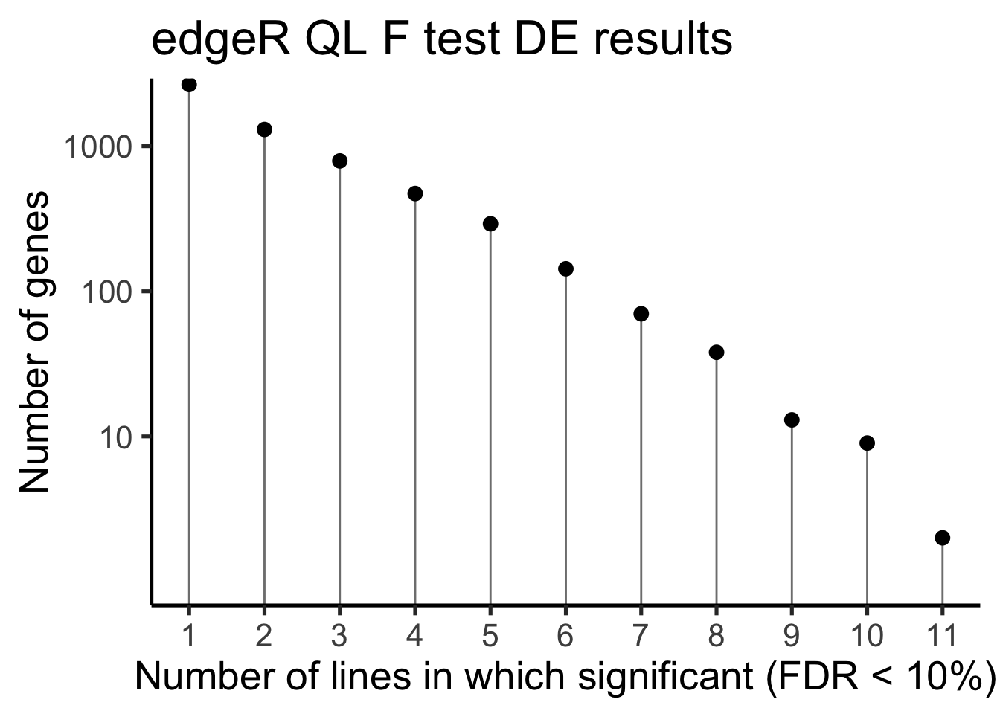
ggsave("figures/differential_expression/alldonors_de_n_sig_donors_n_sig_genes.png",
height = 7, width = 10)
ggsave("figures/differential_expression/alldonors_de_n_sig_donors_n_sig_genes.pdf",
height = 7, width = 10)
ggsave("figures/differential_expression/alldonors_de_n_sig_donors_n_sig_genes.svg",
height = 7, width = 10)
p1 <- df_de_sig_unst %>%
group_by(gene) %>%
dplyr::mutate(id = paste0(donor, gene)) %>% distinct(id, .keep_all = TRUE) %>%
summarise(n_donors = n()) %>% group_by(n_donors) %>%
summarise(count = n()) %>%
ggplot(aes(x = n_donors, y = count)) +
geom_segment(aes(x = n_donors, xend = n_donors, y = count, yend = 0.1),
colour = "gray50") +
geom_point(size = 3) +
scale_x_continuous(breaks = 0:11) +
#coord_cartesian(ylim = c(1, 2200)) +
theme_classic(16) +
xlab("Number of donors significant (FDR < 10%)") +
ylab("Number of genes")
p1 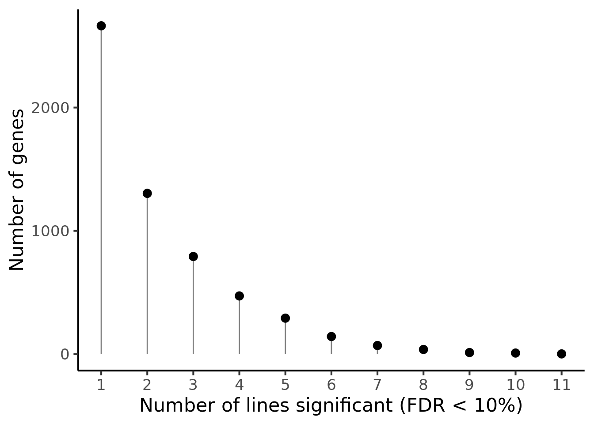
ggsave("figures/differential_expression/alldonors_de_n_sig_donors_n_sig_genes_linscale.png",
height = 7, width = 5.5)
ggsave("figures/differential_expression/alldonors_de_n_sig_donors_n_sig_genes_linscale.pdf",
height = 7, width = 5.5)
ggsave("figures/differential_expression/alldonors_de_n_sig_donors_n_sig_genes_linscale.svg",
height = 7, width = 5.5)p2 <- df_de_sig_unst %>%
group_by(gene) %>%
dplyr::mutate(id = paste0(donor, gene)) %>% distinct(id, .keep_all = TRUE) %>%
summarise(n_donors = n()) %>% dplyr::arrange(gene, n_donors) %>% ungroup() %>%
dplyr::mutate(gene = gsub("ENSG.*_", "", gene)) %>%
dplyr::filter(n_donors > 7.5) %>%
ggplot(aes(y = n_donors, x = reorder(gene, n_donors, max))) +
geom_point(alpha = 0.7, size = 4) +
scale_y_continuous(breaks = 7:11) +
ggthemes::scale_colour_tableau() +
coord_flip() +
theme_bw(16) +
xlab("Gene") + ylab("Number of donors significant")
p2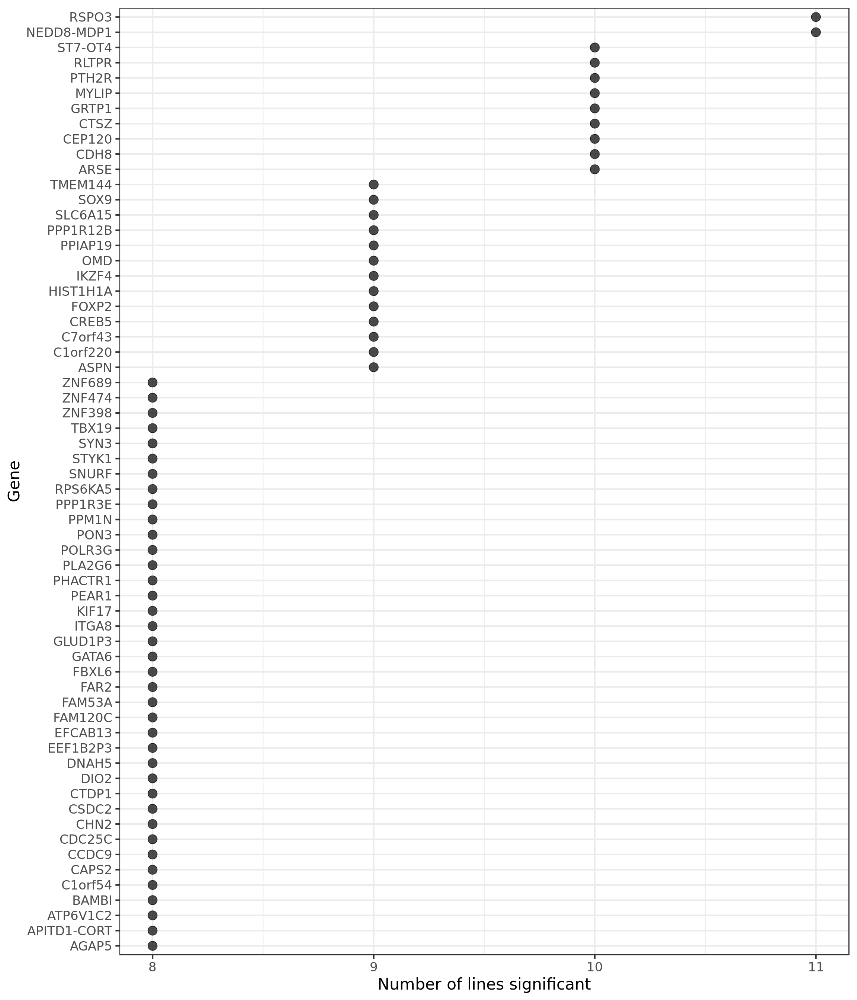
ggsave("figures/differential_expression/alldonors_de_n_sig_donors_topgenes.png",
height = 7, width = 5.5)
ggsave("figures/differential_expression/alldonors_de_n_sig_donors_topgenes.pdf",
height = 7, width = 5.5)
ggsave("figures/differential_expression/alldonors_de_n_sig_donors_topgenes.svg",
height = 7, width = 5.5)
#cowplot::plot_grid(p1, p2, rel_heights = c(0.4, 0.6))
df_donor_n_de <- df_de_sig_unst %>%
group_by(gene) %>%
dplyr::mutate(id = paste0(donor, gene)) %>% distinct(id, .keep_all = TRUE) %>%
group_by(donor) %>%
summarise(count = n())
no_de_donor <- unique(df_de_all_unst[["donor"]])[!(unique(df_de_all_unst[["donor"]]) %in% df_donor_n_de[["donor"]])]
df_donor_n_de <- rbind(df_donor_n_de, data_frame(donor = no_de_donor, count = 0))Permute gene labels to get a null distribution.
df_de_nsig <- df_de_all_unst %>% dplyr::filter(FDR < 0.1) %>%
dplyr::mutate(id = paste0(donor, gene)) %>% distinct(id, .keep_all = TRUE) %>%
group_by(donor) %>%
summarise(n_sig = n())
df_nsig_ncells_de <- full_join(df_ncells_de, df_de_nsig)
df_nsig_ncells_de$n_sig[is.na(df_nsig_ncells_de$n_sig)] <- 0
permute_gene_labels <- function(gene_names, n_de) {
sampled_genes <- c()
for (i in seq_along(n_de))
sampled_genes <- c(sampled_genes, sample(gene_names, size = n_de[i]))
tab <- table(table(sampled_genes))
df <- data_frame(n_donors = 1:11, n_genes = 0)
df[names(tab), 2] <- tab
df
}
n_perm <- 1000
df_perm <- list()
for (i in seq_len(n_perm))
df_perm[[i]] <- permute_gene_labels(rownames(de_res$qlf_list$vass$table),
df_nsig_ncells_de[["n_sig"]])
df_perm <- do.call("rbind", df_perm)
df_perm <- dplyr::mutate(df_perm, data_type = "permuted")
df_perm %>% group_by(n_donors) %>% summarise(min = min(n_genes),
median = median(n_genes),
mean = mean(n_genes),
max = max(n_genes))# A tibble: 11 x 5
n_donors min median mean max
<int> <dbl> <dbl> <dbl> <dbl>
1 1 3946 4120 4121. 4292
2 2 2356 2466 2468. 2578
3 3 821 897 896. 976
4 4 177 223 223. 269
5 5 23 40 40.3 59
6 6 0 5 5.63 14
7 7 0 0 0.595 4
8 8 0 0 0.062 2
9 9 0 0 0.007 1
10 10 0 0 0 0
11 11 0 0 0 0ppp <- df_de_sig_unst %>%
group_by(gene) %>%
dplyr::mutate(id = paste0(donor, gene)) %>% distinct(id, .keep_all = TRUE) %>%
summarise(n_donors = n()) %>% group_by(n_donors) %>%
summarise(n_genes = n()) %>% dplyr::mutate(data_type = "observed") %>%
ggplot(aes(x = n_donors, y = n_genes)) +
# geom_segment(aes(x = n_donors, xend = n_donors, y = count, yend = 0.1),
# colour = "gray50") +
# geom_hline(yintercept = 0, linetype = 2) +
geom_hline(yintercept = 0) +
geom_boxplot(aes(group = n_donors, y = n_genes, colour = data_type),
fill = "gray80", data = df_perm, show.legend = FALSE) +
geom_point(aes(colour = data_type), shape = 17, size = 5) +
scale_x_continuous(breaks = 0:11) +
scale_y_sqrt(breaks = c(0, 10, 100, 500, 1000, 2000, 3000),
labels = c(0, 10, 100, 500, 1000, 2000, 3000),
limits = c(0, 4500)) +
scale_colour_manual(name = '',
values = c("observed" = "black", "permuted" = "gray50"),
labels = c("observed", "permuted")) +
coord_cartesian(ylim = c(0, 4500)) +
theme_bw(18) +
theme(legend.position = c(0.8, 0.88),
panel.grid.major.x = element_blank(),
panel.grid.minor.x = element_blank()) +
guides(colour = guide_legend(override.aes = list(shape = c(17, 19))),
fill = FALSE, boxplot = FALSE) +
xlab("Number of donors significant (FDR < 10%)") +
ylab("Number of genes")
ggsave("figures/differential_expression/alldonors_de_n_sig_donors_n_sig_genes_sqrtscale_perm.png",
height = 7, width = 10, plot = ppp)
ggsave("figures/differential_expression/alldonors_de_n_sig_donors_n_sig_genes_sqrtscale_perm.pdf",
height = 7, width = 10, plot = ppp)
ggsave("figures/differential_expression/alldonors_de_n_sig_donors_n_sig_genes_sqrtscale_perm.svg",
height = 7, width = 10, plot = ppp)
df_de_sig_unst %>%
group_by(gene) %>%
dplyr::mutate(id = paste0(donor, gene)) %>% distinct(id, .keep_all = TRUE) %>%
summarise(n_donors = n()) %>% group_by(n_donors) %>%
summarise(n_genes = n()) %>% dplyr::mutate(data_type = "observed") %>%
ggplot(aes(x = n_donors, y = n_genes)) +
# geom_segment(aes(x = n_donors, xend = n_donors, y = count, yend = 0.1),
# colour = "gray50") +
# geom_hline(yintercept = 0, linetype = 2) +
geom_hline(yintercept = 0) +
geom_boxplot(aes(group = n_donors, y = n_genes, colour = data_type),
fill = "gray80", data = df_perm, show.legend = FALSE) +
geom_point(aes(colour = data_type), shape = 17, size = 5) +
scale_x_continuous(breaks = 0:11) +
scale_y_sqrt(breaks = c(0, 10, 100, 500, 1000, 2000, 3000),
labels = c(0, 10, 100, 500, 1000, 2000, 3000),
limits = c(0, 4500)) +
scale_colour_manual(name = '',
values = c("observed" = "black", "permuted" = "gray50"),
labels = c("observed", "permuted")) +
coord_cartesian(ylim = c(0, 4500)) +
theme(legend.position = c(0.8, 0.88),
panel.grid.major.x = element_blank(),
panel.grid.minor.x = element_blank()) +
guides(colour = guide_legend(override.aes = list(shape = c(17, 19))),
fill = FALSE, boxplot = FALSE) +
xlab("Number of donors significant (FDR < 10%)") +
ylab("Number of genes")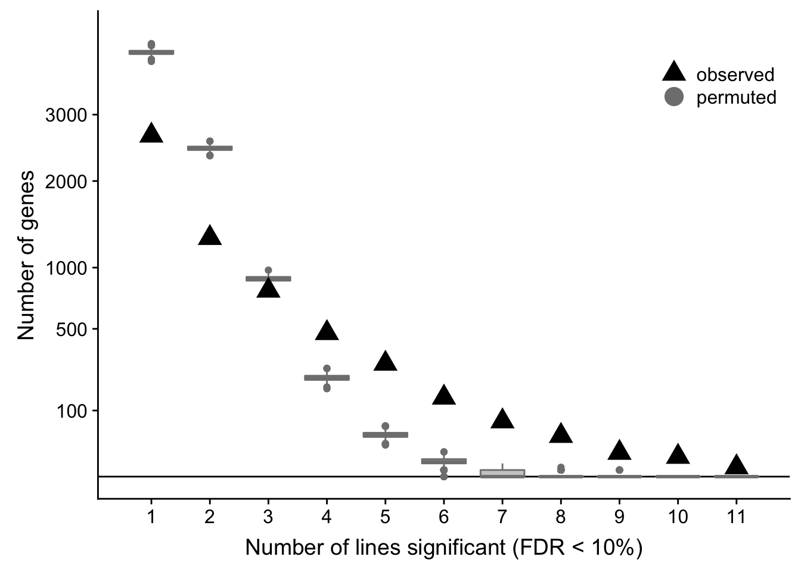
ggsave("figures/differential_expression/alldonors_de_n_sig_donors_n_sig_genes_sqrtscale_perm_skinny.png",
height = 5.5, width = 6.5)Look at recurrently DE genes.
df_gene_n_de <- df_de_sig_unst %>%
group_by(gene) %>%
dplyr::mutate(id = paste0(donor, gene)) %>% distinct(id, .keep_all = TRUE) %>%
group_by(gene) %>%
summarise(count = n()) %>%
dplyr::arrange(desc(count)) %>%
dplyr::mutate(ensembl_gene_id = gsub("_.*", "", gene),
hgnc_symbol = gsub(".*_", "", gene))
df_gene_n_de <- left_join(
df_gene_n_de,
dplyr::select(de_res$qlf_pairwise$joxm$clone2_clone1$table,
ensembl_gene_id, hgnc_symbol, entrezid)
)
df_gene_n_de <- dplyr::mutate(
df_gene_n_de,
cell_cycle_growth = (entrezid %in%
c(Hs.H$HALLMARK_G2M_CHECKPOINT,
Hs.H$HALLMARK_MITOTIC_SPINDLE,
Hs.H$HALLMARK_E2F_TARGETS)),
myc = (entrezid %in% c(Hs.H$HALLMARK_MYC_TARGETS_V1,
Hs.H$HALLMARK_MYC_TARGETS_V2)),
emt = (entrezid %in% c(Hs.H$HALLMARK_EPITHELIAL_MESENCHYMAL_TRANSITION))
)
df_gene_n_de %>% dplyr::filter(count >= 8) %>%
DT::datatable(.)Camera results
First, aggregate gene set enrichment results across all donors.
fdr_thresh <- 1
df_camera_all_unst <- data_frame()
for (geneset in names(de_res[["camera"]])) {
for (donor in names(de_res[["camera"]][[geneset]])) {
for (coeff in names(de_res[["camera"]][[geneset]][[donor]])) {
for (stat in names(de_res[["camera"]][[geneset]][[donor]][[coeff]])) {
tmp <- de_res[["camera"]][[geneset]][[donor]][[coeff]][[stat]]
tmp <- tmp[tmp$FDR <= fdr_thresh,]
if (nrow(tmp) > 0.5) {
tmp[["collection"]] <- geneset
tmp[["geneset"]] <- rownames(tmp)
tmp[["coeff"]] <- coeff
tmp[["donor"]] <- donor
tmp[["stat"]] <- stat
df_camera_all_unst <- bind_rows(df_camera_all_unst, tmp)
}
}
}
}
}
fdr_thresh <- 0.05
df_camera_sig_unst <- data_frame()
for (geneset in names(de_res[["camera"]])) {
for (donor in names(de_res[["camera"]][[geneset]])) {
for (coeff in names(de_res[["camera"]][[geneset]][[donor]])) {
for (stat in names(de_res[["camera"]][[geneset]][[donor]][[coeff]])) {
tmp <- de_res[["camera"]][[geneset]][[donor]][[coeff]][[stat]]
tmp <- tmp[tmp$FDR <= fdr_thresh,]
if (nrow(tmp) > 0.5) {
tmp[["collection"]] <- geneset
tmp[["geneset"]] <- rownames(tmp)
tmp[["coeff"]] <- coeff
tmp[["donor"]] <- donor
tmp[["stat"]] <- stat
df_camera_sig_unst <- bind_rows(df_camera_sig_unst, tmp)
}
}
}
}
}
df_camera_sig_unst <- dplyr::mutate(
df_camera_sig_unst,
contrast = gsub("_", " - ", coeff),
msigdb_collection = plyr::mapvalues(collection, from = c("c2", "c6", "H"), to = c("MSigDB curated (c2)", "MSigDB oncogenic (c6)", "MSigDB Hallmark")))
df_camera_all_unst <- dplyr::mutate(
df_camera_all_unst,
contrast = gsub("_", " - ", coeff),
msigdb_collection = plyr::mapvalues(collection, from = c("c2", "c6", "H"), to = c("MSigDB curated (c2)", "MSigDB oncogenic (c6)", "MSigDB Hallmark")))We now have a dataframe for significant (FDR <5%) results from the camera gene set enrichment results.
head(df_camera_sig_unst)# A tibble: 6 x 11
NGenes Direction PValue FDR collection geneset coeff donor stat
<dbl> <chr> <dbl> <dbl> <chr> <chr> <chr> <chr> <chr>
1 6 Down 6.43e-15 3.02e-11 c2 VALK_A… clon… euts signF
2 7 Down 2.29e-11 5.37e- 8 c2 WANG_R… clon… euts signF
3 5 Down 7.80e-11 1.22e- 7 c2 GUTIER… clon… euts signF
4 8 Down 1.35e- 9 1.58e- 6 c2 KUMAMO… clon… euts signF
5 11 Down 4.95e- 9 4.65e- 6 c2 VALK_A… clon… euts signF
6 4 Down 2.86e- 8 1.92e- 5 c2 REACTO… clon… euts signF
# ... with 2 more variables: contrast <chr>, msigdb_collection <chr>And a dataframe with all results.
head(df_camera_all_unst)# A tibble: 6 x 11
NGenes Direction PValue FDR collection geneset coeff donor stat
<dbl> <chr> <dbl> <dbl> <chr> <chr> <chr> <chr> <chr>
1 7 Down 2.88e-4 0.771 c2 WANG_R… clon… euts logFC
2 10 Down 4.73e-4 0.771 c2 BIOCAR… clon… euts logFC
3 15 Up 8.30e-4 0.771 c2 LI_CIS… clon… euts logFC
4 14 Down 1.07e-3 0.771 c2 MOROSE… clon… euts logFC
5 5 Down 1.12e-3 0.771 c2 IYENGA… clon… euts logFC
6 15 Up 1.19e-3 0.771 c2 PID_TC… clon… euts logFC
# ... with 2 more variables: contrast <chr>, msigdb_collection <chr>For now, focus on gene set enrichment results computed using log-fold change statistics for pairwise comparisons of clones estimated from the edgeR QL-F models.
We can look at all significant results summarised by donor, geneset and pairwise contrast of clones.
df_camera_sig_unst %>%
dplyr::filter(stat == "logFC") %>%
dplyr::mutate(donor = factor(donor, levels = rev(levels(factor(donor))))) %>%
ggplot(aes(y = -log10(PValue), x = donor, colour = contrast)) +
geom_sina(alpha = 0.7) +
facet_grid(contrast ~ msigdb_collection) +
scale_colour_brewer(palette = "Accent") +
coord_flip() + theme_bw()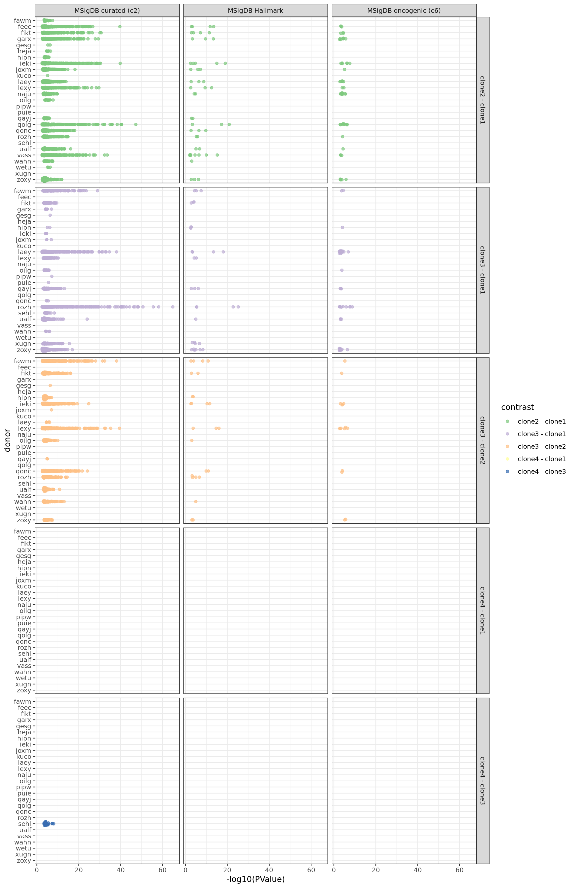
Similarly, we can look at all results summarised by donor, geneset and pairwise contrast of clones.
df_camera_all_unst %>%
dplyr::filter(stat == "logFC") %>%
dplyr::mutate(donor = factor(donor, levels = rev(levels(factor(donor))))) %>%
ggplot(aes(y = -log10(FDR), x = donor, colour = contrast)) +
geom_sina(alpha = 0.7) +
geom_hline(yintercept = -log10(0.05), linetype = 2, colour = "firebrick") +
facet_grid(contrast ~ msigdb_collection, scales = "free_x") +
scale_colour_brewer(palette = "Accent") +
coord_flip() + theme_bw()
ggsave("figures/differential_expression/alldonors_camera_enrichment_by_donor_all_results.png",
height = 16, width = 14)
ggsave("figures/differential_expression/alldonors_camera_enrichment_by_donor_all_results.pdf",
height = 16, width = 14)
ggsave("figures/differential_expression/alldonors_camera_enrichment_by_donor_all_results.svg",
height = 16, width = 14)We can check the number of significant gene sets for each donor, for each MSigDB gene set collection.
df_camera_sig_unst %>%
dplyr::filter(stat == "logFC") %>%
dplyr::filter(FDR < 0.05) %>%
group_by(donor, msigdb_collection) %>%
summarise(n_sig = n()) %>% print(n = Inf)# A tibble: 67 x 3
# Groups: donor [?]
donor msigdb_collection n_sig
<chr> <chr> <int>
1 fawm MSigDB curated (c2) 348
2 fawm MSigDB Hallmark 7
3 fawm MSigDB oncogenic (c6) 3
4 feec MSigDB curated (c2) 256
5 feec MSigDB Hallmark 4
6 feec MSigDB oncogenic (c6) 3
7 fikt MSigDB curated (c2) 426
8 fikt MSigDB Hallmark 9
9 fikt MSigDB oncogenic (c6) 4
10 garx MSigDB curated (c2) 244
11 garx MSigDB Hallmark 3
12 garx MSigDB oncogenic (c6) 7
13 gesg MSigDB curated (c2) 4
14 heja MSigDB curated (c2) 7
15 hipn MSigDB curated (c2) 99
16 hipn MSigDB Hallmark 5
17 hipn MSigDB oncogenic (c6) 1
18 ieki MSigDB curated (c2) 480
19 ieki MSigDB Hallmark 9
20 ieki MSigDB oncogenic (c6) 10
21 joxm MSigDB curated (c2) 150
22 joxm MSigDB Hallmark 3
23 joxm MSigDB oncogenic (c6) 1
24 kuco MSigDB curated (c2) 1
25 laey MSigDB curated (c2) 502
26 laey MSigDB Hallmark 7
27 laey MSigDB oncogenic (c6) 19
28 lexy MSigDB curated (c2) 546
29 lexy MSigDB Hallmark 8
30 lexy MSigDB oncogenic (c6) 8
31 naju MSigDB curated (c2) 99
32 naju MSigDB Hallmark 2
33 naju MSigDB oncogenic (c6) 10
34 oilg MSigDB curated (c2) 102
35 oilg MSigDB Hallmark 1
36 oilg MSigDB oncogenic (c6) 1
37 pipw MSigDB curated (c2) 1
38 puie MSigDB curated (c2) 1
39 qayj MSigDB curated (c2) 152
40 qayj MSigDB Hallmark 5
41 qayj MSigDB oncogenic (c6) 4
42 qolg MSigDB curated (c2) 293
43 qolg MSigDB Hallmark 3
44 qolg MSigDB oncogenic (c6) 9
45 qonc MSigDB curated (c2) 382
46 qonc MSigDB Hallmark 5
47 qonc MSigDB oncogenic (c6) 2
48 rozh MSigDB curated (c2) 553
49 rozh MSigDB Hallmark 10
50 rozh MSigDB oncogenic (c6) 10
51 sehl MSigDB curated (c2) 59
52 sehl MSigDB Hallmark 2
53 sehl MSigDB oncogenic (c6) 2
54 ualf MSigDB curated (c2) 378
55 ualf MSigDB Hallmark 3
56 ualf MSigDB oncogenic (c6) 4
57 vass MSigDB curated (c2) 270
58 vass MSigDB Hallmark 8
59 vass MSigDB oncogenic (c6) 3
60 wahn MSigDB curated (c2) 129
61 wahn MSigDB Hallmark 2
62 wetu MSigDB curated (c2) 3
63 xugn MSigDB curated (c2) 120
64 xugn MSigDB Hallmark 4
65 zoxy MSigDB curated (c2) 488
66 zoxy MSigDB Hallmark 11
67 zoxy MSigDB oncogenic (c6) 19We can look at the number of significant gene sets for each donor.
## simpler version
df_camera_all_unst %>%
dplyr::filter(stat == "logFC") %>%
group_by(donor, msigdb_collection) %>%
summarise(n_sig = sum(FDR < 0.05)) %>% ungroup() %>%
dplyr::mutate(donor = factor(donor, levels = rev(levels(factor(donor))))) %>%
ggplot(aes(y = n_sig, x = donor)) +
geom_point(alpha = 1, size = 4) +
facet_wrap(~ msigdb_collection, scales = "free_x") +
scale_fill_brewer(palette = "Accent") +
coord_flip() +
theme_bw(16) +
xlab("Donor") + ylab("Number of significant genesets (FDR < 5%)") +
ggtitle("Camera MSigDB gene set enrichment by donor")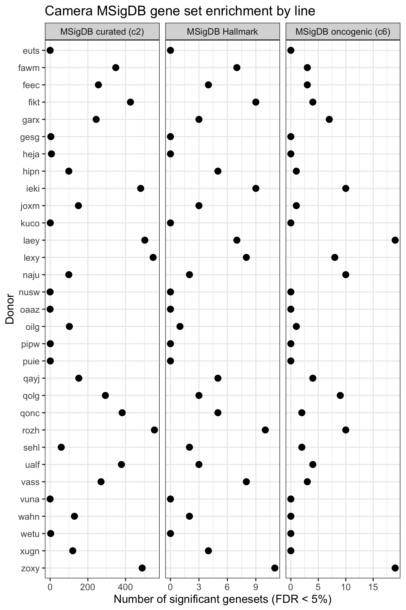
ggsave("figures/differential_expression/alldonors_camera_enrichment_by_donor_simple.png",
height = 7, width = 10)
ggsave("figures/differential_expression/alldonors_camera_enrichment_by_donor_simple.pdf",
height = 7, width = 10)
ggsave("figures/differential_expression/alldonors_camera_enrichment_by_donor_simple.svg",
height = 7, width = 10)We can look at the effect of the the number of cells for each donor on the DE results obtained.
ncells_by_donor <- rep(NA, length(sce_unst_list))
names(ncells_by_donor) <- names(sce_unst_list)
for (don in names(sce_unst_list))
ncells_by_donor[don] <- ncol(sce_unst_list[[don]])
df_camera_all_unst %>%
dplyr::filter(stat == "logFC") %>%
group_by(donor, msigdb_collection) %>%
summarise(n_sig = sum(FDR < 0.05)) %>% ungroup() -> df_to_plot
df_to_plot <- inner_join(df_to_plot,
data_frame(donor = names(ncells_by_donor),
ncells = ncells_by_donor))
df_to_plot %>%
dplyr::mutate(donor = factor(donor, levels = rev(levels(factor(donor))))) %>%
ggplot(aes(y = n_sig, x = donor, size = ncells)) +
geom_point(alpha = 1) +
facet_wrap(~ msigdb_collection, scales = "free_x") +
scale_fill_brewer(palette = "Accent") +
coord_flip() +
theme_bw(16) +
xlab("Donor") + ylab("Number of significant genesets (FDR < 5%)") +
ggtitle("Camera MSigDB gene set enrichment by donor")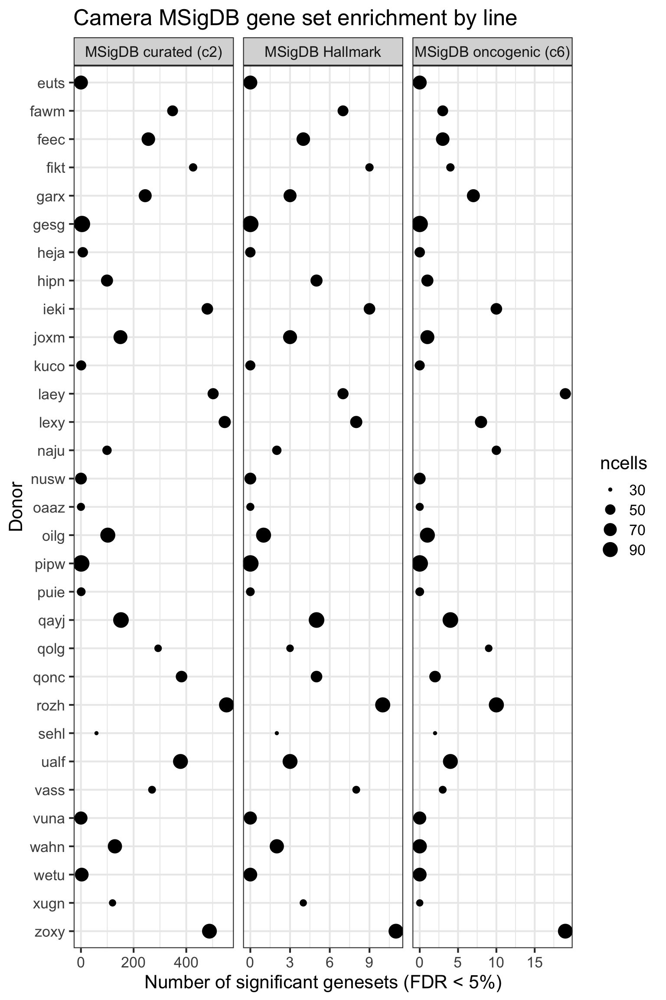
ggsave("figures/differential_expression/alldonors_camera_enrichment_by_donor_simple_size_by_ncells.png",
height = 7, width = 10)
ggsave("figures/differential_expression/alldonors_camera_enrichment_by_donor_simple_size_by_ncells.pdf",
height = 7, width = 10)
ggsave("figures/differential_expression/alldonors_camera_enrichment_by_donor_simple_size_by_ncells.svg",
height = 7, width = 10)Hallmark gene set
Focus now on looking at DE results for the MSigDB Hallmark gene set (50 of the best-characterised gene sets as determined by MSigDB).
Look at the gene sets that are found to be enriched in multiple donors.
## Hallmark geneset
df_camera_sig_unst %>% dplyr::filter(collection == "H") %>%
dplyr::filter(stat == "logFC") %>%
group_by(geneset) %>%
dplyr::mutate(id = paste0(donor, geneset)) %>% distinct(id, .keep_all = TRUE) %>%
summarise(n_donors = n()) %>% dplyr::arrange(geneset, n_donors) %>% ungroup() %>%
dplyr::mutate(geneset = gsub("_", " ", gsub("HALLMARK_", "", geneset))) %>%
ggplot(aes(y = n_donors, x = reorder(geneset, n_donors, max))) +
geom_point(alpha = 0.7, size = 4) +
ggthemes::scale_colour_tableau() +
coord_flip() +
theme_bw(14) +
xlab("Gene set") + ylab("Number of donors significant")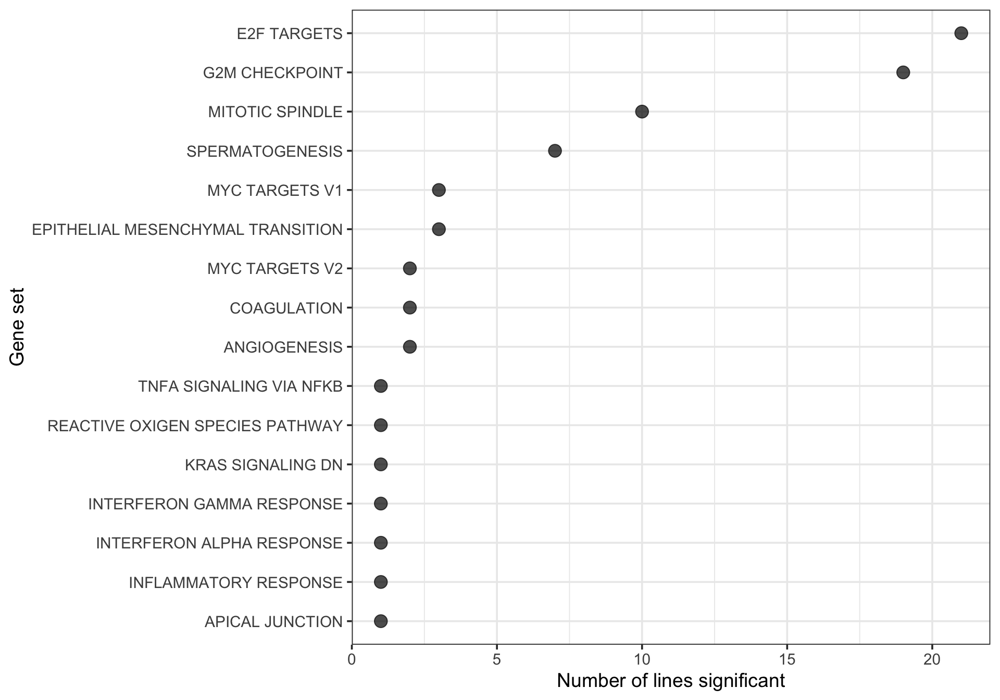
ggsave("figures/differential_expression/alldonors_camera_enrichment_H_by_geneset.png",
height = 7, width = 9.5)
ggsave("figures/differential_expression/alldonors_camera_enrichment_H_by_geneset.pdf",
height = 7, width = 9.5)
ggsave("figures/differential_expression/alldonors_camera_enrichment_H_by_geneset.svg",
height = 7, width = 9.5)
## number of donors with at least one significant geneset
tmp <- df_camera_sig_unst %>% dplyr::filter(collection == "H") %>%
dplyr::filter(stat == "logFC") %>%
group_by(geneset)
unique(tmp[["donor"]]) [1] "fawm" "feec" "fikt" "garx" "hipn" "ieki" "joxm" "laey" "lexy" "naju"
[11] "oilg" "qayj" "qolg" "qonc" "rozh" "sehl" "ualf" "vass" "wahn" "xugn"
[21] "zoxy"21 donors have at least one significantly enriched Hallmark gene set.
For gene sets related directly to cell cycle and growth, we see contrasts being both up- and down- regulated, but for EMT, coagulation and angiogenesis pathways, we only see these down-regulated.
df_camera_sig_unst %>% dplyr::filter(collection == "H") %>%
dplyr::filter(stat == "logFC") %>%
group_by(geneset, Direction) %>%
dplyr::mutate(id = paste0(donor, geneset)) %>%
summarise(n_donors = n()) %>% dplyr::arrange(geneset, n_donors) %>% ungroup() %>%
ggplot(aes(y = n_donors, x = reorder(geneset, n_donors, max),
colour = Direction)) +
geom_point(alpha = 0.7, size = 4, position = position_dodge(width = 0.5)) +
ggthemes::scale_colour_tableau() +
coord_flip() +
theme_bw(16) +
xlab("Gene set") + ylab("Number of donors significant") +
ggtitle("Camera MSigDB Hallmark gene set enrichment")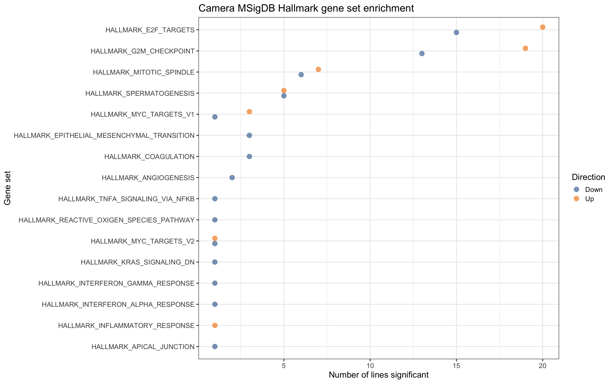
Heatmap of results for camera Hallmark geneset testing
We can get an overview of all the Hallmark gene set results by producing a heatmap, first showing just the significant (FDR < 5%) results across all donors and pairwise contrasts of clones.
repeated_sig_H_genesets <- df_camera_sig_unst %>%
dplyr::filter(collection == "H", stat == "logFC") %>%
group_by(geneset) %>%
dplyr::mutate(id = paste0(donor, geneset)) %>% distinct(id, .keep_all = TRUE) %>%
summarise(n_donors = n()) %>% dplyr::arrange(n_donors) %>%
dplyr::filter(n_donors > 0.5)
repeated_sig_H_genesets_vec <- unique(repeated_sig_H_genesets[["geneset"]])
repeated_sig_H_genesets_vec <- gsub("_", " ", gsub("HALLMARK_", "",
repeated_sig_H_genesets_vec))
df_camera_sig_unst %>%
dplyr::mutate(geneset = gsub("_", " ", gsub("HALLMARK_", "", geneset))) %>%
dplyr::mutate(geneset =
factor(geneset, levels = repeated_sig_H_genesets_vec)) %>%
dplyr::filter(geneset %in% repeated_sig_H_genesets_vec) %>%
dplyr::mutate(id = paste0(donor, ": ", contrast)) ->
df_4_heatmap
div_lines <- gsub(": c.*", "",
sort(unique(paste0(df_4_heatmap[["donor"]], ": ",
df_4_heatmap[["contrast"]])))) %>% table %>% cumsum + 0.5
df_4_heatmap %>%
ggplot(aes(x = id, y = geneset, fill = Direction)) +
geom_tile() +
geom_vline(xintercept = div_lines, colour = "gray70") +
scale_fill_manual(values = c("lightgoldenrod1", "sienna1")) +
theme(axis.text.x = element_text(angle = 60, hjust = 1))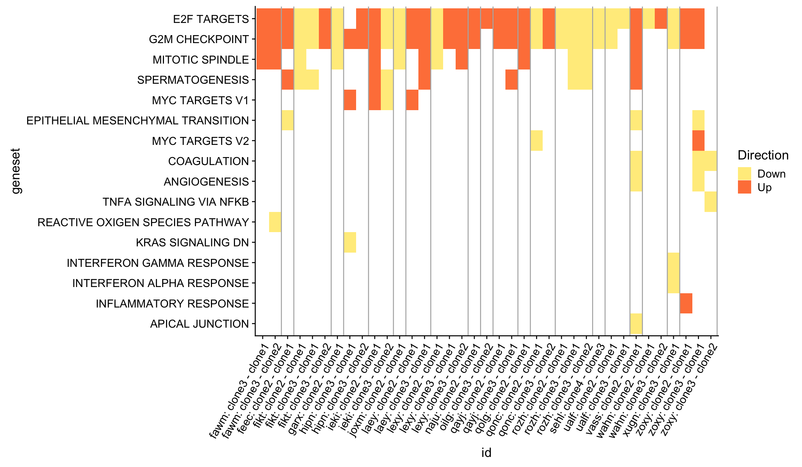
ggsave("figures/differential_expression/top_genesets_H_direction_heatmap.png", height = 6, width = 12)
ggsave("figures/differential_expression/top_genesets_H_direction_heatmap.pdf", height = 6, width = 12)
ggsave("figures/differential_expression/top_genesets_H_direction_heatmap.svg", height = 6, width = 12)We can do the same for all results for the gene sets that are significantly enriched in at least two donors.
df_camera_all_unst %>%
dplyr::mutate(geneset = gsub("_", " ", gsub("HALLMARK_", "", geneset))) %>%
dplyr::mutate(geneset =
factor(geneset, levels = repeated_sig_H_genesets_vec)) %>%
dplyr::filter(geneset %in% repeated_sig_H_genesets_vec) %>%
dplyr::mutate(id = paste0(donor, ": ", contrast)) ->
df_4_heatmap_all
df_4_heatmap_all <- dplyr::mutate(
df_4_heatmap_all,
minlog10P = cut(-log10(PValue), breaks = c(0, 1, 2, 3, 4, 5, 30)))
div_lines_all <- gsub(": c.*", "",
sort(unique(paste0(df_4_heatmap_all[["donor"]], ": ",
df_4_heatmap_all[["contrast"]])))) %>% table %>% cumsum + 0.5
pp <- df_4_heatmap_all %>%
ggplot(aes(x = id, y = geneset, fill = Direction, alpha = minlog10P)) +
geom_tile() +
geom_point(alpha = 1, data = df_4_heatmap, pch = 19, size = 0.5, show.legend = FALSE) +
geom_vline(xintercept = div_lines_all, colour = "gray70") +
scale_fill_manual(values = c("lightgoldenrod1", "sienna1")) +
scale_alpha_discrete(name = "-log10(P)") +
ylab("Gene set") +
xlab("Donor and clone comparison") +
theme(axis.text.x = element_text(angle = 60, hjust = 1),
legend.position = "right")
pp 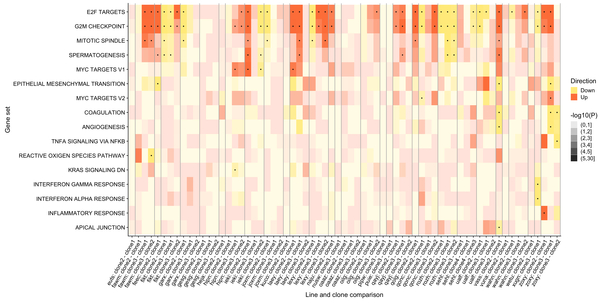
ggsave("figures/differential_expression/top_genesets_H_direction_heatmap_all_contrasts.png", height = 9, width = 20)
ggsave("figures/differential_expression/top_genesets_H_direction_heatmap_all_contrasts.pdf", height = 9, width = 20)
ggsave("figures/differential_expression/top_genesets_H_direction_heatmap_all_contrasts.svg", height = 9, width = 20)Finally, we can add a panel to this figure showing the number of donors in which each of these gene sets is significantly enriched.
## Hallmark geneset
pp_nsig <- df_camera_sig_unst %>% dplyr::filter(collection == "H") %>%
dplyr::filter(stat == "logFC") %>%
group_by(geneset) %>%
dplyr::mutate(id = paste0(donor, geneset)) %>% distinct(id, .keep_all = TRUE) %>%
summarise(n_donors = n()) %>% dplyr::arrange(geneset, n_donors) %>% ungroup() %>%
dplyr::mutate(geneset = gsub("_", " ", gsub("HALLMARK_", "", geneset))) %>%
ggplot(aes(y = n_donors, x = reorder(geneset, n_donors, max))) +
geom_hline(yintercept = 0, colour = "gray50") +
geom_segment(aes(xend = reorder(geneset, n_donors, max), yend = 0),
colour = "gray50") +
geom_point(size = 4, colour = "gray30", alpha = 1) +
ggthemes::scale_colour_tableau() +
coord_flip() +
xlab("Gene set") + ylab("Number of donors significant") +
theme(axis.title.y = element_blank(),
axis.text.y = element_blank(),
axis.ticks.y = element_blank(),
axis.line.y = element_blank())
prow <- plot_grid(pp + theme(legend.position = "none"),
pp_nsig, align = 'h', rel_widths = c(7, 1))
lgnd <- get_legend(pp)
plot_grid(prow, lgnd, rel_widths = c(3, .3))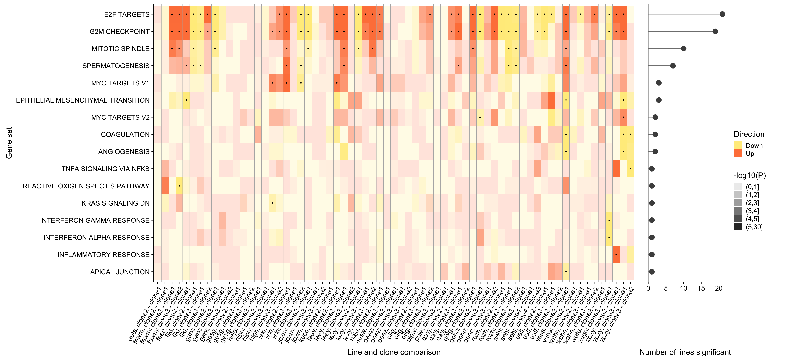
ggsave("figures/differential_expression/top_genesets_H_direction_heatmap_all_contrasts_with_nsig_donors.png", height = 9, width = 20)
ggsave("figures/differential_expression/top_genesets_H_direction_heatmap_all_contrasts_with_nsig_donors.pdf", height = 9, width = 20)
ggsave("figures/differential_expression/top_genesets_H_direction_heatmap_all_contrasts_with_nsig_donors.svg", height = 9, width = 20)Correlation of gene set results and genes contained
Let’s look at the correlation between gene set results (Spearman correlation of signed -log10(P-values) from camera tests) and compare to the proportion of genes overlapping between pairs of gene sets.
repeated_sig_H_genesets_vec2 <- paste0("HALLMARK_",
gsub(" ", "_", repeated_sig_H_genesets_vec))
## all results
df_H_pvals <- df_camera_all_unst %>% dplyr::filter(collection == "H") %>%
dplyr::filter(stat == "logFC", geneset %in% repeated_sig_H_genesets_vec2) %>%
dplyr::mutate(donor_coeff = paste(donor, coeff, sep = "."),
sign = ifelse(Direction == "Down", -1, 1),
signed_P = sign * -log10(PValue)) %>%
dplyr::select(geneset, donor_coeff, signed_P) %>%
tidyr::spread(key = donor_coeff, value = signed_P)
mat_H_pvals <- as.matrix(df_H_pvals[, -1])
rownames(mat_H_pvals) <- gsub("_", " ", gsub("HALLMARK_", "", df_H_pvals[[1]]))
cor_H_pvals <- cor(t(mat_H_pvals), method = "spearman")
p.mat <- cor_pmat(t(mat_H_pvals))
ggcorrplot(cor_H_pvals, hc.order = TRUE, p.mat = p.mat, insig = "blank") +
theme(panel.grid.major = element_blank(),
panel.grid.minor = element_blank())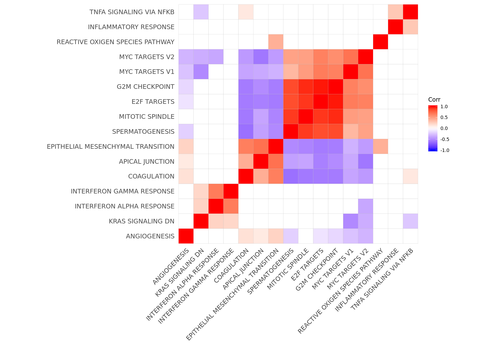
hclust_cor <- hclust(as.dist(1 - cor_H_pvals))
corrplot1 <- ggcorrplot(cor_H_pvals[hclust_cor$order, hclust_cor$order],
p.mat = p.mat[hclust_cor$order, hclust_cor$order], insig = "blank") +
theme(panel.grid.major = element_blank(),
panel.grid.minor = element_blank())
mat_H_gene_overlap <- matrix(nrow = nrow(cor_H_pvals), ncol = ncol(cor_H_pvals),
dimnames = dimnames(cor_H_pvals))
for (i in seq_along(repeated_sig_H_genesets_vec2)) {
for (j in seq_along(repeated_sig_H_genesets_vec2)) {
gs1 <- paste0("HALLMARK_", gsub(" ", "_", rownames(mat_H_gene_overlap)[i]))
gs2 <- paste0("HALLMARK_", gsub(" ", "_", rownames(mat_H_gene_overlap)[j]))
mat_H_gene_overlap[i, j] <- mean(Hs.H[[gs1]] %in% Hs.H[[gs2]])
}
}
corrplot2 <- ggcorrplot(mat_H_gene_overlap[hclust_cor$order, hclust_cor$order]) +
scale_fill_gradient(name = "Gene set\noverlap", low = "white", high = "black") +
theme(panel.grid.major = element_blank(),
panel.grid.minor = element_blank())
corrplot2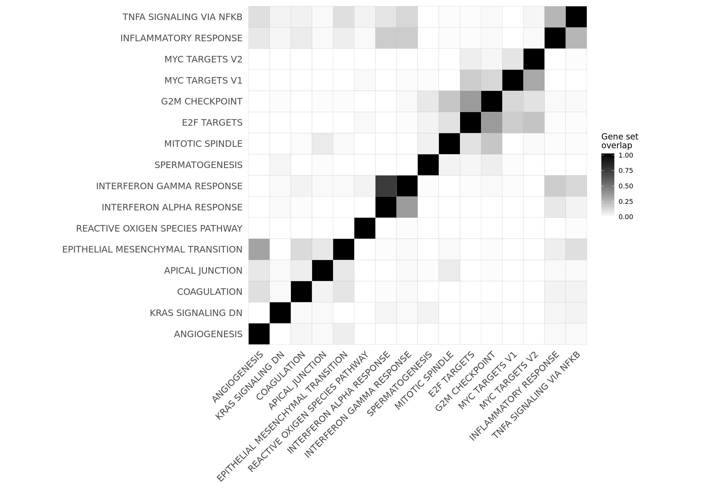
corrplot3 <- corrplot2 + theme(axis.text.y = element_blank())plot_grid(corrplot1 + theme(plot.margin = unit(c(0,0,0,0), "cm")),
corrplot3 + theme(plot.margin = unit(c(0,0,0,0), "cm")),
align = "h", axis = "b", rel_widths = c(0.58, 0.42))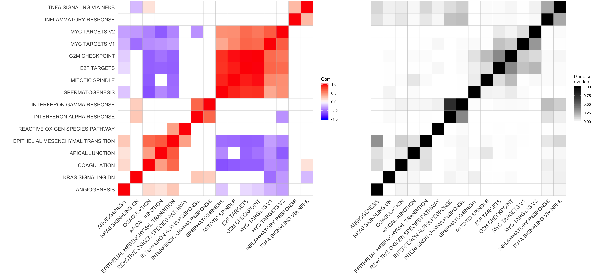
ggsave("figures/differential_expression/top_genesets_H_corrplots.png", height = 9, width = 20)
ggsave("figures/differential_expression/top_genesets_H_corrplots.pdf", height = 9, width = 20)
ggsave("figures/differential_expression/top_genesets_H_corrplots.svg", height = 9, width = 20)Plot gene set correlation with the number of donors in which each gene set is significant.
pp_nsig <- df_camera_sig_unst %>% dplyr::filter(collection == "H") %>%
dplyr::filter(stat == "logFC") %>%
group_by(geneset) %>%
dplyr::mutate(id = paste0(donor, geneset)) %>% distinct(id, .keep_all = TRUE) %>%
summarise(n_donors = n()) %>% dplyr::arrange(geneset, n_donors) %>% ungroup() %>%
dplyr::mutate(geneset = gsub("_", " ", gsub("HALLMARK_", "", geneset))) %>%
dplyr::mutate(geneset = factor(
geneset, levels = rownames(mat_H_gene_overlap)[hclust_cor$order])) %>%
ggplot(aes(y = n_donors, x = geneset)) +
geom_hline(yintercept = 0, colour = "gray50") +
geom_segment(aes(xend = geneset, yend = 0),
colour = "gray50") +
geom_point(size = 4, colour = "gray30", alpha = 1) +
ggthemes::scale_colour_tableau() +
coord_flip() +
xlab("Gene set") + ylab("Number of donors\nsignificant") +
theme(axis.title.y = element_blank(),
axis.text.y = element_blank(),
axis.ticks.y = element_blank(),
axis.line.y = element_blank())
ggdraw() +
draw_plot(corrplot1 + theme(legend.position = "top"),
x = 0, y = 0, width = 0.8, scale = 1) +
draw_plot(pp_nsig,
x = 0.785, y = 0.213, width = 0.2, height = 0.685)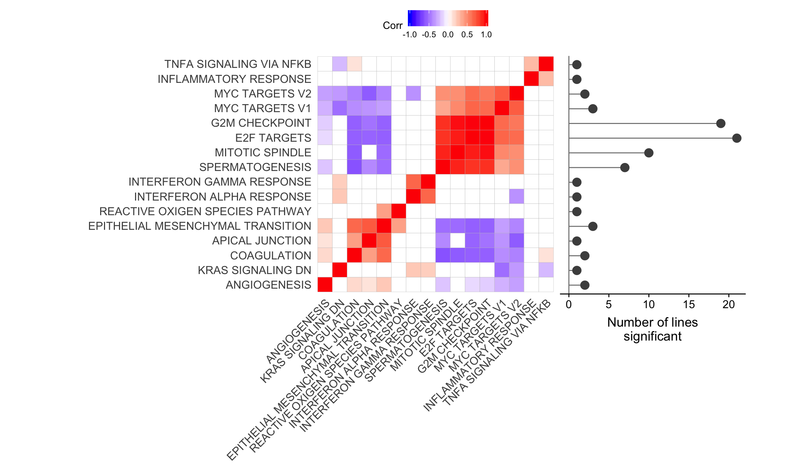
ggsave("figures/differential_expression/top_genesets_H_corrplot_with_nsig_donor.png",
height = 9, width = 11)
ggsave("figures/differential_expression/top_genesets_H_corrplot_with_nsig_donor.pdf",
height = 9, width = 11)Linking DE to selection
df_donor_info <- read.table("data/donor_info_070818.txt")
df_donor_info <- as_data_frame(df_donor_info)
df_donor_info$donor <- df_donor_info$donor_short
df_ncells_de <- assignments %>% dplyr::filter(assigned != "unassigned",
donor_short_id %in% names(de_res$qlf_list)) %>%
group_by(donor_short_id) %>%
summarise(n_cells = n())
colnames(df_ncells_de)[1] <- "donor"
df_prop_assigned <- assignments %>%
dplyr::filter(donor_short_id %in% names(de_res$qlf_list)) %>%
group_by(donor_short_id) %>%
summarise(prop_assigned = mean(assigned != "unassigned"))
colnames(df_prop_assigned)[1] <- "donor"
df_nvars_by_cat <- readr::read_tsv("output/nvars_by_category_by_donor.tsv")
df_nvars_by_cat_wd <- tidyr::spread(
df_nvars_by_cat[, 1:3], consequence, n_vars_all_genes)
df_nvars_by_cat_wd <- left_join(
summarise(group_by(df_nvars_by_cat, donor), nvars_all = sum(n_vars_all_genes)),
df_nvars_by_cat_wd
)
df_nvars_by_cat_wd <- df_nvars_by_cat %>%
dplyr::filter(consequence %in% c("missense", "splicing", "nonsense")) %>%
group_by(donor) %>%
summarise(nvars_misnonspli = sum(n_vars_all_genes)) %>%
left_join(., df_nvars_by_cat_wd)
df_donor_info <- left_join(df_ncells_de, df_donor_info)
df_donor_info <- left_join(df_prop_assigned, df_donor_info)
df_donor_info <- left_join(df_donor_n_de, df_donor_info)
df_donor_info$n_de_genes <- df_donor_info$count
df_donor_info <- left_join(df_donor_info, df_nvars_by_cat_wd)
nbglm_nde <- MASS::glm.nb(n_de_genes ~ n_cells, data = df_donor_info)
df_nbglm_nde <- broom::augment(nbglm_nde) %>%
left_join(df_donor_info)
## n_de vs n_cells
df_nbglm_nde %>%
dplyr::mutate(selection = factor(
selection, levels = c("neutral", "undetermined", "selected"))) %>%
ggplot(aes(x = n_cells, y = n_de_genes, fill = selection)) +
geom_smooth(aes(group = 1), colour = "firebrick", method = "lm", level = 0.9) +
geom_point(size = 3, shape = 21) +
ylab("Number of DE genes") +
xlab("Number of cells") +
scale_fill_manual(values = c("dodgerblue", "#CCCCCC", "dodgerblue4"))
ggsave("figures/differential_expression/n_de_genes_vs_n_cells.png",
height = 5.5, width = 5.5)
## selection, n_de resid boxplot
df_nbglm_nde %>%
dplyr::mutate(selection = factor(
selection, levels = c("neutral", "undetermined", "selected"))) %>%
ggplot(aes(x = selection, y = .resid)) +
geom_violin(aes(fill = selection), alpha = 0.7) +
geom_boxplot(outlier.alpha = 0, width = 0.2) +
ggbeeswarm::geom_quasirandom(aes(fill = selection), size = 3, shape = 21) +
ylab("Number of DE genes (residual from NB GLM)") +
xlab("Inferred selection status") +
scale_fill_manual(values = c("dodgerblue", "#CCCCCC", "dodgerblue4")) +
coord_flip()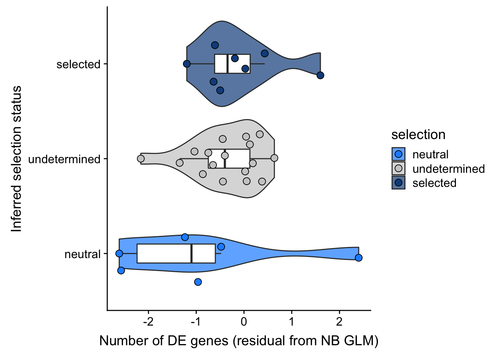
ggsave("figures/differential_expression/n_de_resid_selection_boxplot.png",
height = 4.5, width = 6.5)
summary(lm(.resid ~ selection, data = df_nbglm_nde))
Call:
lm(formula = .resid ~ selection, data = df_nbglm_nde)
Residuals:
Min 1Q Median 3Q Max
-1.7896 -0.4823 -0.0568 0.4630 3.3122
Coefficients:
Estimate Std. Error t value Pr(>|t|)
(Intercept) -0.9100 0.4242 -2.145 0.0408 *
selectionselected 0.7766 0.5612 1.384 0.1773
selectionundetermined 0.5391 0.4934 1.093 0.2839
---
Signif. codes: 0 '***' 0.001 '**' 0.01 '*' 0.05 '.' 0.1 ' ' 1
Residual standard error: 1.039 on 28 degrees of freedom
Multiple R-squared: 0.06604, Adjusted R-squared: -0.0006725
F-statistic: 0.9899 on 2 and 28 DF, p-value: 0.3842## selection, n_de (sqrt scale) boxplot
df_nbglm_nde %>%
dplyr::mutate(selection = factor(
selection, levels = c("neutral", "undetermined", "selected"))) %>%
ggplot(aes(x = selection, y = n_de_genes)) +
geom_violin(aes(fill = selection), alpha = 0.7) +
geom_boxplot(outlier.alpha = 0, width = 0.2) +
ggbeeswarm::geom_quasirandom(aes(fill = selection), size = 3, shape = 21) +
ylab("Number of DE genes") +
xlab("Inferred selection status") +
scale_y_sqrt(breaks = c(0, 100, 500, 1000, 1500, 2000, 2500)) +
scale_fill_manual(values = c("dodgerblue", "#CCCCCC", "dodgerblue4")) +
coord_flip()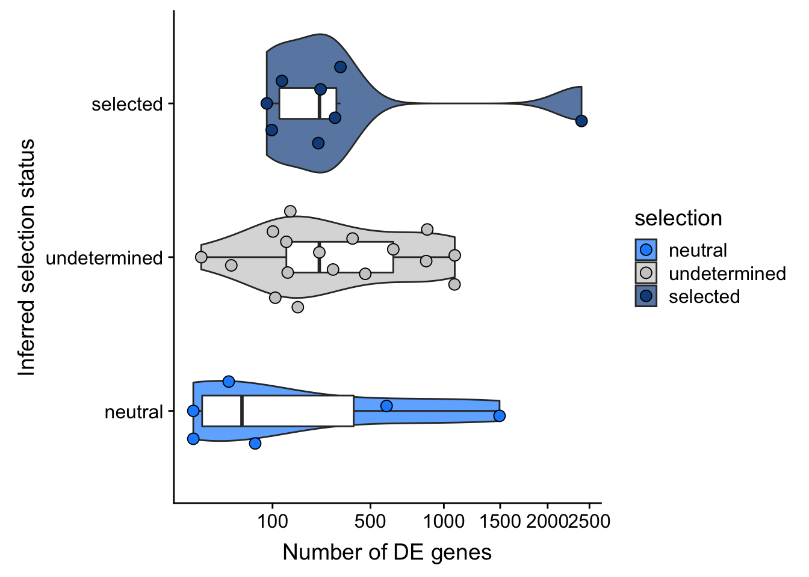
ggsave("figures/differential_expression/n_de_sqrt_selection_boxplot.png",
height = 5.5, width = 6.5)
## n_de (resids) vs goodness of fit cumul. mutation model
df_nbglm_nde %>%
dplyr::mutate(selection = factor(
selection, levels = c("neutral", "undetermined", "selected"))) %>%
ggplot(aes(x = rsq_ntrtestr, y = .resid, fill = selection)) +
geom_smooth(aes(group = 1), colour = "firebrick", method = "lm", level = 0.9) +
geom_point(size = 3, shape = 21) +
ylab("Number of DE genes (residual from NB GLM)") +
xlab("Goodness of fit: cumulative mutations") +
scale_fill_manual(values = c("dodgerblue", "#CCCCCC", "dodgerblue4"))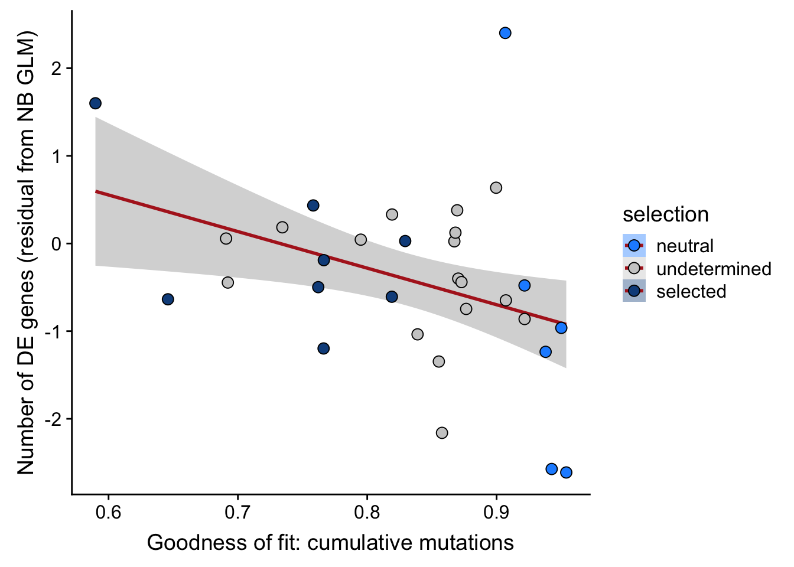
ggsave("figures/differential_expression/n_de_resid_selection_vs_gof_cumul_mut_model.png",
height = 6.5, width = 5.5)
## n_de (sqrt scale) vs goodness of fit cumul. mutation model
df_nbglm_nde %>%
dplyr::mutate(selection = factor(
selection, levels = c("neutral", "undetermined", "selected"))) %>%
ggplot(aes(x = rsq_ntrtestr, y = n_de_genes, fill = selection)) +
geom_smooth(aes(group = 1), colour = "firebrick", method = "lm", level = 0.9) +
geom_point(size = 3, shape = 21) +
ylab("Number of DE genes") +
xlab("Goodness of fit: cumulative mutations") +
scale_fill_manual(values = c("dodgerblue", "#CCCCCC", "dodgerblue4"))
ggsave("figures/differential_expression/n_de_sqrt_selection_vs_gof_cumul_mut_model.png",
height = 5.5, width = 6.5)
## n_de (resids) vs goodness of fit NB model
df_nbglm_nde %>%
dplyr::mutate(selection = factor(
selection, levels = c("neutral", "undetermined", "selected"))) %>%
ggplot(aes(x = rsq_negbinfit, y = .resid, fill = selection)) +
geom_smooth(aes(group = 1), colour = "firebrick", method = "lm", level = 0.9) +
geom_point(size = 3, shape = 21) +
ylab("Number of DE genes (residual from NB GLM)") +
xlab("Goodness of fit: negative binomial distribution") +
scale_fill_manual(values = c("dodgerblue", "#CCCCCC", "dodgerblue4"))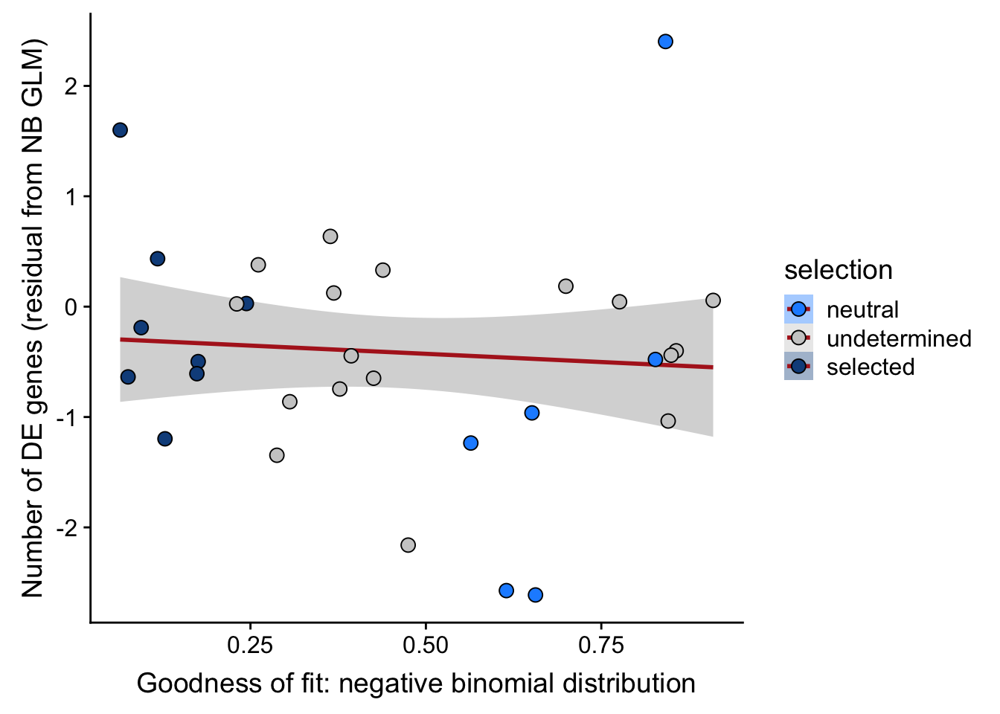
ggsave("figures/differential_expression/n_de_resid_selection_vs_gof_negbin_model.png",
height = 5.5, width = 6.5)
## n_de (resids) vs mutational load (all)
df_nbglm_nde %>%
dplyr::mutate(selection = factor(
selection, levels = c("neutral", "undetermined", "selected"))) %>%
ggplot(aes(x = nvars_all, y = .resid, fill = selection)) +
geom_smooth(aes(group = 1), colour = "firebrick", method = "lm", level = 0.9) +
geom_point(size = 3, shape = 21) +
ylab("Number of DE genes (residual from NB GLM)") +
xlab("Number of somatic variants") +
scale_fill_manual(values = c("dodgerblue", "#CCCCCC", "dodgerblue4")) +
scale_x_log10(breaks = c(5, 10, 20, 50, 100, 500))
ggsave("figures/differential_expression/n_de_resid_selection_vs_n_somatic_vars_all.png",
height = 5.5, width = 6.5)
## n_de (sqrt scale) vs mutational load (all)
df_nbglm_nde %>%
dplyr::mutate(selection = factor(
selection, levels = c("neutral", "undetermined", "selected"))) %>%
ggplot(aes(x = nvars_all, y = n_de_genes, fill = selection)) +
geom_smooth(aes(group = 1), colour = "firebrick", method = "lm", level = 0.9) +
geom_point(size = 3, shape = 21) +
ylab("Number of DE genes") +
xlab("Number of somatic variants") +
scale_fill_manual(values = c("dodgerblue", "#CCCCCC", "dodgerblue4")) +
scale_x_log10(breaks = c(5, 10, 20, 50, 100, 500)) +
scale_y_sqrt(breaks = c(10, 100, 500, 1000, 1500, 2000, 2500))
ggsave("figures/differential_expression/n_de_sqrt_selection_vs_n_somatic_vars_all.png",
height = 5.5, width = 6.5)
## n_de (resids) vs mutational load (missense)
df_nbglm_nde %>%
dplyr::mutate(selection = factor(
selection, levels = c("neutral", "undetermined", "selected"))) %>%
ggplot(aes(x = missense, y = .resid, fill = selection)) +
geom_smooth(aes(group = 1), colour = "firebrick", method = "lm", level = 0.9) +
geom_point(size = 3, shape = 21) +
ylab("Number of DE genes (residual from NB GLM)") +
xlab("Number of somatic missense variants") +
scale_fill_manual(values = c("dodgerblue", "#CCCCCC", "dodgerblue4")) +
scale_x_log10(breaks = c(5, 10, 20, 50, 100, 500))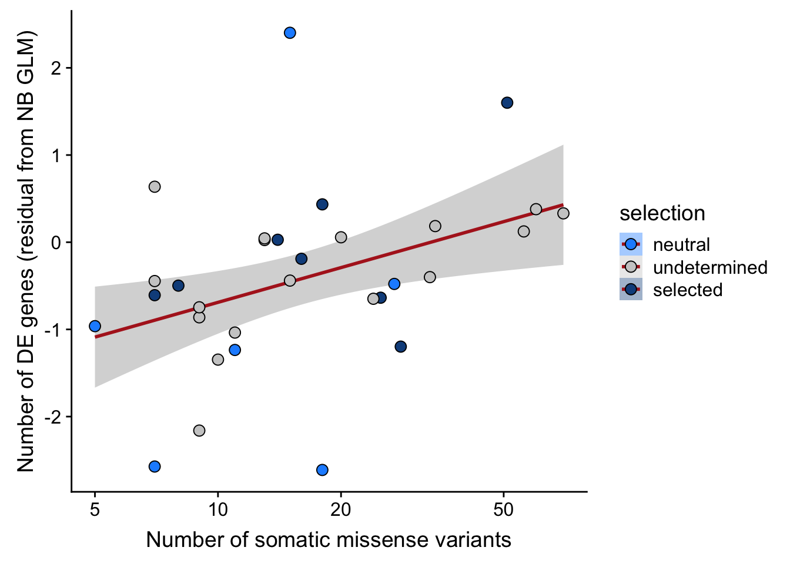
ggsave("figures/differential_expression/n_de_resid_selection_vs_n_somatic_vars_missense.png",
height = 5.5, width = 6.5)
## n_de (resids) vs mutational load (missense, nonsense, splicing)
df_nbglm_nde %>%
dplyr::mutate(selection = factor(
selection, levels = c("neutral", "undetermined", "selected"))) %>%
ggplot(aes(x = nvars_misnonspli, y = .resid, fill = selection)) +
geom_smooth(aes(group = 1), colour = "firebrick", method = "lm", level = 0.9) +
geom_point(size = 3, shape = 21) +
ylab("Number of DE genes (residual from NB GLM)") +
xlab("Number of missense, nonsense & splicing variants") +
scale_fill_manual(values = c("dodgerblue", "#CCCCCC", "dodgerblue4")) +
scale_x_log10(breaks = c(5, 10, 20, 50, 100, 500))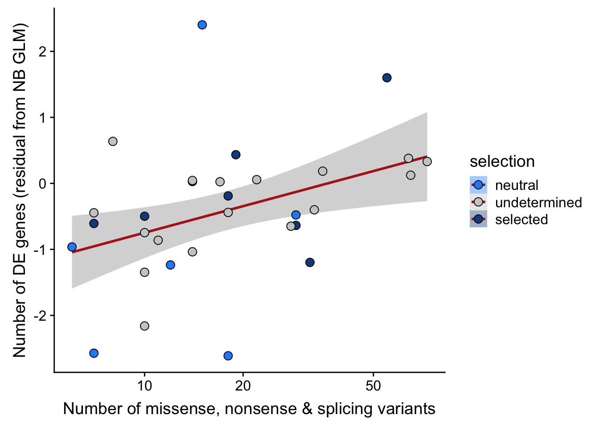
ggsave("figures/differential_expression/n_de_resid_selection_vs_n_somatic_vars_misnonspli.png",
height = 6.5, width = 5.5)
#
# fdr_thresh <- 0.1
# df_de_sig_unst <- data_frame()
# for (donor in names(de_res[["qlf_list"]])) {
# tmp <- de_res[["qlf_list"]][[donor]]$table
# tmp$gene <- rownames(de_res[["qlf_list"]][[donor]]$table)
# ihw_res <- ihw(PValue ~ logCPM, data = tmp, alpha = 0.05)
# tmp$FDR <- adj_pvalues(ihw_res)
# tmp <- tmp[tmp$FDR < fdr_thresh,]
# if (nrow(tmp) > 0.5) {
# tmp[["donor"]] <- donor
# df_de_sig_unst <- bind_rows(df_de_sig_unst, tmp)
# }
# }
#
#
# df_donor_n_de <- df_de_sig_unst %>%
# group_by(gene) %>%
# dplyr::mutate(id = paste0(donor, gene)) %>% distinct(id, .keep_all = TRUE) %>%
# group_by(donor) %>%
# summarise(count = n())Linking pathway results to selection
Not yet implemented
Compare pathway results to clone prevalence
Hallmark gene sets. Not yet implemented.
Write DE and pathway results to file
## Write DE results to file:
for (don in names(de_res$qlf_list)) {
de_res$qlf_list[[don]]$table %>%
dplyr::mutate(gene = rownames(.), FDR = IHW::adj_pvalues(IHW::ihw(PValue, logCPM, alpha = 0.1))) %>%
dplyr::arrange(FDR) %>% write_tsv(
paste0("output/differential_expression/", don, "_qlf_de_results.tsv"))
}
for (don in names(de_res$camera$H)) {
for (cntrst in names(de_res$camera$H[[don]])) {
de_res$camera$H[[don]][[cntrst]]$logFC %>%
dplyr::mutate(geneset = rownames(.)) %>%
dplyr::arrange(FDR) %>% write_tsv(
paste0("output/differential_expression/", don, "_camera_hallmark_geneset_results_", cntrst, ".tsv"))
}
}Session information
devtools::session_info() setting value
version R version 3.5.1 (2018-07-02)
system x86_64, darwin15.6.0
ui X11
language (EN)
collate en_GB.UTF-8
tz Europe/London
date 2018-08-17
package * version date source
AnnotationDbi * 1.42.1 2018-05-08 Bioconductor
assertthat 0.2.0 2017-04-11 CRAN (R 3.5.0)
backports 1.1.2 2017-12-13 CRAN (R 3.5.0)
base * 3.5.1 2018-07-05 local
beeswarm 0.2.3 2016-04-25 CRAN (R 3.5.0)
bindr 0.1.1 2018-03-13 CRAN (R 3.5.0)
bindrcpp * 0.2.2 2018-03-29 CRAN (R 3.5.0)
Biobase * 2.40.0 2018-05-01 Bioconductor
BiocGenerics * 0.26.0 2018-05-01 Bioconductor
BiocParallel * 1.14.2 2018-07-08 Bioconductor
bit 1.1-14 2018-05-29 CRAN (R 3.5.0)
bit64 0.9-7 2017-05-08 CRAN (R 3.5.0)
bitops 1.0-6 2013-08-17 CRAN (R 3.5.0)
blob 1.1.1 2018-03-25 CRAN (R 3.5.0)
broom * 0.5.0 2018-07-17 CRAN (R 3.5.0)
cellranger 1.1.0 2016-07-27 CRAN (R 3.5.0)
cli 1.0.0 2017-11-05 CRAN (R 3.5.0)
colorspace 1.3-2 2016-12-14 CRAN (R 3.5.0)
compiler 3.5.1 2018-07-05 local
cowplot * 0.9.3 2018-07-15 CRAN (R 3.5.0)
crayon 1.3.4 2017-09-16 CRAN (R 3.5.0)
crosstalk 1.0.0 2016-12-21 CRAN (R 3.5.0)
data.table 1.11.4 2018-05-27 CRAN (R 3.5.0)
datasets * 3.5.1 2018-07-05 local
DBI 1.0.0 2018-05-02 CRAN (R 3.5.0)
DelayedArray * 0.6.3 2018-08-01 Bioconductor
DelayedMatrixStats 1.2.0 2018-05-01 Bioconductor
devtools 1.13.6 2018-06-27 CRAN (R 3.5.0)
digest 0.6.15 2018-01-28 CRAN (R 3.5.0)
dplyr * 0.7.6 2018-06-29 CRAN (R 3.5.1)
DT 0.4 2018-01-30 CRAN (R 3.5.0)
edgeR * 3.22.3 2018-06-21 Bioconductor
evaluate 0.11 2018-07-17 CRAN (R 3.5.0)
fansi 0.2.3 2018-05-06 CRAN (R 3.5.0)
fdrtool 1.2.15 2015-07-08 CRAN (R 3.5.0)
forcats * 0.3.0 2018-02-19 CRAN (R 3.5.0)
gdtools * 0.1.7 2018-02-27 CRAN (R 3.5.0)
GenomeInfoDb * 1.16.0 2018-05-01 Bioconductor
GenomeInfoDbData 1.1.0 2018-04-25 Bioconductor
GenomicRanges * 1.32.6 2018-07-20 Bioconductor
ggbeeswarm 0.6.0 2017-08-07 CRAN (R 3.5.0)
ggcorrplot * 0.1.1 2016-01-12 CRAN (R 3.5.0)
ggforce * 0.1.3 2018-07-07 CRAN (R 3.5.0)
ggplot2 * 3.0.0 2018-07-03 CRAN (R 3.5.0)
ggrepel * 0.8.0 2018-05-09 CRAN (R 3.5.0)
ggridges * 0.5.0 2018-04-05 CRAN (R 3.5.0)
ggthemes 4.0.0 2018-07-19 CRAN (R 3.5.0)
git2r 0.23.0 2018-07-17 CRAN (R 3.5.0)
glue 1.3.0 2018-07-17 CRAN (R 3.5.0)
graphics * 3.5.1 2018-07-05 local
grDevices * 3.5.1 2018-07-05 local
grid 3.5.1 2018-07-05 local
gridExtra 2.3 2017-09-09 CRAN (R 3.5.0)
gtable 0.2.0 2016-02-26 CRAN (R 3.5.0)
haven 1.1.2 2018-06-27 CRAN (R 3.5.0)
hms 0.4.2 2018-03-10 CRAN (R 3.5.0)
htmltools 0.3.6 2017-04-28 CRAN (R 3.5.0)
htmlwidgets 1.2 2018-04-19 CRAN (R 3.5.0)
httpuv 1.4.5 2018-07-19 CRAN (R 3.5.0)
httr 1.3.1 2017-08-20 CRAN (R 3.5.0)
IHW * 1.8.0 2018-05-01 Bioconductor
IRanges * 2.14.10 2018-05-16 Bioconductor
jsonlite 1.5 2017-06-01 CRAN (R 3.5.0)
knitr 1.20 2018-02-20 CRAN (R 3.5.0)
labeling 0.3 2014-08-23 CRAN (R 3.5.0)
later 0.7.3 2018-06-08 CRAN (R 3.5.0)
lattice 0.20-35 2017-03-25 CRAN (R 3.5.1)
lazyeval 0.2.1 2017-10-29 CRAN (R 3.5.0)
limma * 3.36.2 2018-06-21 Bioconductor
locfit 1.5-9.1 2013-04-20 CRAN (R 3.5.0)
lpsymphony 1.8.0 2018-05-01 Bioconductor (R 3.5.0)
lubridate 1.7.4 2018-04-11 CRAN (R 3.5.0)
magrittr 1.5 2014-11-22 CRAN (R 3.5.0)
MASS 7.3-50 2018-04-30 CRAN (R 3.5.1)
Matrix 1.2-14 2018-04-13 CRAN (R 3.5.1)
matrixStats * 0.54.0 2018-07-23 CRAN (R 3.5.0)
memoise 1.1.0 2017-04-21 CRAN (R 3.5.0)
methods * 3.5.1 2018-07-05 local
mime 0.5 2016-07-07 CRAN (R 3.5.0)
modelr 0.1.2 2018-05-11 CRAN (R 3.5.0)
munsell 0.5.0 2018-06-12 CRAN (R 3.5.0)
nlme 3.1-137 2018-04-07 CRAN (R 3.5.1)
org.Hs.eg.db * 3.6.0 2018-05-15 Bioconductor
parallel * 3.5.1 2018-07-05 local
pillar 1.3.0 2018-07-14 CRAN (R 3.5.0)
pkgconfig 2.0.1 2017-03-21 CRAN (R 3.5.0)
plyr 1.8.4 2016-06-08 CRAN (R 3.5.0)
promises 1.0.1 2018-04-13 CRAN (R 3.5.0)
purrr * 0.2.5 2018-05-29 CRAN (R 3.5.0)
R.methodsS3 1.7.1 2016-02-16 CRAN (R 3.5.0)
R.oo 1.22.0 2018-04-22 CRAN (R 3.5.0)
R.utils 2.6.0 2017-11-05 CRAN (R 3.5.0)
R6 2.2.2 2017-06-17 CRAN (R 3.5.0)
RColorBrewer * 1.1-2 2014-12-07 CRAN (R 3.5.0)
Rcpp 0.12.18 2018-07-23 CRAN (R 3.5.0)
RCurl 1.95-4.11 2018-07-15 CRAN (R 3.5.0)
readr * 1.1.1 2017-05-16 CRAN (R 3.5.0)
readxl 1.1.0 2018-04-20 CRAN (R 3.5.0)
reshape2 1.4.3 2017-12-11 CRAN (R 3.5.0)
rhdf5 2.24.0 2018-05-01 Bioconductor
Rhdf5lib 1.2.1 2018-05-17 Bioconductor
rjson 0.2.20 2018-06-08 CRAN (R 3.5.0)
rlang * 0.2.1 2018-05-30 CRAN (R 3.5.0)
rmarkdown 1.10 2018-06-11 CRAN (R 3.5.0)
rprojroot 1.3-2 2018-01-03 CRAN (R 3.5.0)
RSQLite 2.1.1 2018-05-06 CRAN (R 3.5.0)
rstudioapi 0.7 2017-09-07 CRAN (R 3.5.0)
rvest 0.3.2 2016-06-17 CRAN (R 3.5.0)
S4Vectors * 0.18.3 2018-06-08 Bioconductor
scales 0.5.0 2017-08-24 CRAN (R 3.5.0)
scater * 1.9.12 2018-08-03 Bioconductor
shiny 1.1.0 2018-05-17 CRAN (R 3.5.0)
SingleCellExperiment * 1.2.0 2018-05-01 Bioconductor
slam 0.1-43 2018-04-23 CRAN (R 3.5.0)
stats * 3.5.1 2018-07-05 local
stats4 * 3.5.1 2018-07-05 local
stringi 1.2.4 2018-07-20 CRAN (R 3.5.0)
stringr * 1.3.1 2018-05-10 CRAN (R 3.5.0)
SummarizedExperiment * 1.10.1 2018-05-11 Bioconductor
superheat * 0.1.0 2017-02-04 CRAN (R 3.5.0)
svglite 1.2.1 2017-09-11 CRAN (R 3.5.0)
tibble * 1.4.2 2018-01-22 CRAN (R 3.5.0)
tidyr * 0.8.1 2018-05-18 CRAN (R 3.5.0)
tidyselect 0.2.4 2018-02-26 CRAN (R 3.5.0)
tidyverse * 1.2.1 2017-11-14 CRAN (R 3.5.0)
tools 3.5.1 2018-07-05 local
tweenr 0.1.5 2016-10-10 CRAN (R 3.5.0)
tximport 1.8.0 2018-05-01 Bioconductor
units 0.6-0 2018-06-09 CRAN (R 3.5.0)
utf8 1.1.4 2018-05-24 CRAN (R 3.5.0)
utils * 3.5.1 2018-07-05 local
vipor 0.4.5 2017-03-22 CRAN (R 3.5.0)
viridis * 0.5.1 2018-03-29 CRAN (R 3.5.0)
viridisLite * 0.3.0 2018-02-01 CRAN (R 3.5.0)
whisker 0.3-2 2013-04-28 CRAN (R 3.5.0)
withr 2.1.2 2018-03-15 CRAN (R 3.5.0)
workflowr 1.1.1 2018-07-06 CRAN (R 3.5.0)
xml2 1.2.0 2018-01-24 CRAN (R 3.5.0)
xtable 1.8-2 2016-02-05 CRAN (R 3.5.0)
XVector 0.20.0 2018-05-01 Bioconductor
yaml 2.2.0 2018-07-25 CRAN (R 3.5.1)
zlibbioc 1.26.0 2018-05-01 Bioconductor This reproducible R Markdown analysis was created with workflowr 1.1.1